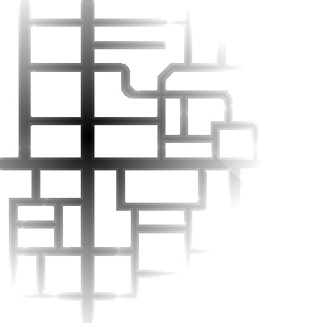

Silvia Calvo Cabello
Se desarrolló un programa en Unibotics para realizar el algoritmo de localizacion Montecarlo. Para hayar el incremento de del movimiento del robot se usaba la propia localizacion del robot debido a que al ser simulado y no tenía otras opciones como odom. Más tarde, Unibotics añadió esta función de getOdom(), que devolvía la odometría en vez de la posición y asi calculamos el avance.
EXPLICAION DEL CODIGOEl algoritmo de localización con láser basado en el método Montecarlo es una técnica utilizada en sistemas de navegación, robótica y localización para determinar la posición de un robot, utilizando medidas de distancia con láser y un enfoque probabilístico.
Consta de 3 partes:
- Modelo probabilistico de observación - En esta etapa, se crean muchas partículas aleatorias que representan diferentes posiciones posibles del robot en el espacio. Estas partículas son distribuciones hipotéticas que representan posibles posiciones iniciales dentro del mapa.
- Modelo de movimeinto - En esta fase, el robot se mueve según comandos de desplazamiento, y cada partícula se actualiza para reflejar ese movimiento, añadiendo un poco de ruido para simular la incertidumbre en el movimiento real.
- Regeneracion de particulas (Resampling) - Después de actualizar el movimiento de las partículas, comparamos las mediciones del sensor láser del robot (distancias reales a paredes u objetos cercanos) con las mediciones esperadas para cada partícula en el mapa conocido.
Para hayar los pesos de cada particula, se haya la diferencia entre el laser real y el laser teorico de cada partícula. Para hacer que sea proporcionalmente inverso (cuanta menor la direncia, mayor el peso) se calcula de la siguinete manera:
peso = 1 / (1 + diferencia)
Paso de coordenadas Worl a Map y viceversa:
El mapa se representa como una matriz en la que las coordenadas se almacenan de izquierda a derecha y de arriba hacia abajo. En cambio, en el mundo real, la coordenada (0,0) corresponde al punto de inicio del robot (ubicado en el centro del mapa). Debido a esto, las coordenadas no coinciden directamente entre ambos sistemas.
Párticulas:
Las particulas se encuentran situadas respecto al mundo, no respecto al mapa. Sin embargo, para calcular la distancia a obstaáculos es necesario hacer respecto del mapa, ya que es donde se encuentran las coordenadas de estos (siendo el valor de su coordenada 0)
Pesos:
Esta práctica muestra las partículas y muestra su peso de tal manera que cuanto más opaca sea la partícula, mayoy es su peso.

Convergencia:
Para comprobar si el algortimo convergia, primero lo probé creando las particulas cerca del robot usando el getPose() y una vez comprobado que funcionaba (V1 en el código), pasé a generar las particulas iniciales al azar.
Bump and Go: :
Para el movimiento del robot primero hice un código simle de prueba, que el robot fuese hacia adelante y girando todo el rato, incluso aunque se chocase, más adelante lo cambié a un Bump and Go simple para que se alejase de los obstáculos.
.
AMCL:
Intenté hacer el Adaptive Monte Carlo Localitation pero esto no generaba buenos resultados FOTOOOOOOOOOOOOOOOOOOOOOOOOOOOOOOOOOOOOOOOO.
A continuacion se puede ver el funcionamiento del algoritmo en un robot roomba que recorre una casa mediante un bump and go.